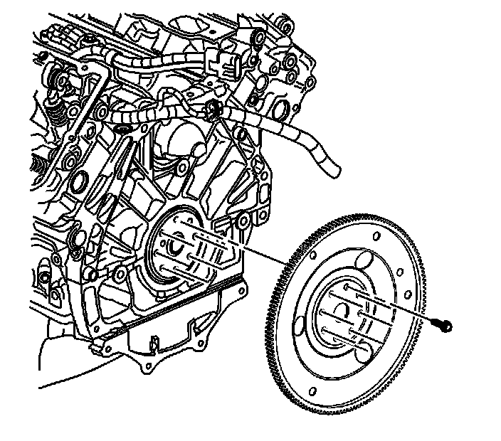

Flex Plate: Service and Repair
Engine Flywheel Replacement
Tools Required
J 45059 Torque Angle Meter
Removal Procedure

1. Remove the transmission assembly. Refer to Transmission Replacement (MX0) (Removal and Replacement)Transmission Replacement (MX7) (Removal and Replacement) or Transmission Replacement (LY7 - Gas, 6 Cylinder, 3.6L, SFI, V6) (Removal and Replacement)Transmission Replacement (LH2 - Gas, 8 Cylinder, 4.6L, SFI, V8, DOHC, HO) (Removal and Replacement) .
2. Use a Snap-On(TM) A144A Flywheel Turner, or equivalent to prevent the engine from rotating.
3. Remove the engine flywheel bolts.
4. Clean and inspect the flywheel. Refer to Engine Flywheel Cleaning and Inspection (Overhaul)
Installation Procedure
1. Install the engine flywheel.
2. Apply sealant to the engine flywheel bolts. Refer to Sealers, Adhesives, and Lubricants (Specifications) for the correct part number.
3. Install the engine flywheel bolts finger tight.
4. Use a Snap-On(TM) A144A Flywheel Turner, or equivalent to prevent the engine from rotating.
Notice: Refer to Fastener Notice (Fastener Notice) .
5. Tighten the engine flywheel bolts.
1. First Pass - Tighten the flywheel bolts to 30 N.m (22 lb ft).
2. Final Pass - Tighten the flywheel bolts an additional 50 degrees using the J 45059 .
6. Install the transmission assembly. Refer to Transmission Replacement (MX0) (Removal and Replacement)Transmission Replacement (MX7) (Removal and Replacement) or Transmission Replacement (LY7 - Gas, 6 Cylinder, 3.6L, SFI, V6) (Removal and Replacement)Transmission Replacement (LH2 - Gas, 8 Cylinder, 4.6L, SFI, V8, DOHC, HO) (Removal and Replacement) .